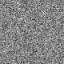
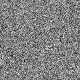
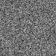

最小
最大
平均値
標準偏差
標準誤差
0
65.5929
5.45036
12.3043
0.153804
| オプション | 必須項目/選択項目 | 説明 | デフォルト |
|---|---|---|---|
| -r | 必須 | 参照ファイル設定 | NULL |
| -o | 必須 | 出力ファイル設定 | NULL |
| -s | 選択 | ノイズの標準偏差値を設定 | 1.0 |
| -h | 選択 | ヘルプを表示 |
|
最小 |
0 |
|  | 最小 |
-3.53454 |
|  | 最小 |
-37.4746 |
|  | 最小 |
-0.0374746 |